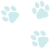

経験豊富なスタッフが
24時間365日常駐
当院は24時間365日いつでも対応できるよう、豊富な経験を持つ獣医師や看護師が約50名体制で常駐しております。
滑石きたむら動物病院
当院は地域に密着し、皆さまの大切な家族の一員である動物たちのホームドクターを目指しています。
緊急時だけではなく、日常のちょっとした不安や違和感などお気軽にご相談ください。
動物たちが健康で幸せな生活を送ることができるようサポートいたします。

当院は24時間365日いつでも対応できるよう、豊富な経験を持つ獣医師や看護師が約50名体制で常駐しております。
犬・猫だけではなく、ウサギやハムスター、爬虫類や両生類、鳥類などエキゾチックアニマルも対応しております。
外出が難しい動物たちや飼い主さまのために、獣医師や看護師がご自宅まで伺う往診サービスも行っております。
シニアや介護などのペットのための自宅で診療するサービスです。
短時間の一時預かりから宿泊までご利用いただけるサービスです。
動物の体に負担をかけない技術や液剤を使用いたします。
| 2021.02.22 | 去勢手術の助成金 | 長崎県より犬猫去勢手術の助成金制度が導入されました。 |
| 2021.01.23 | 往診の範囲が拡大 | 往診の範囲を長崎市内から長崎県内まで拡大しました。 |
| 2021.01.01 | 新年のご挨拶 | 謹賀新年。今年もよろしくお願いいたします。 |
| 2020.12.01 | 年末年始の診療 | 当院では年末年始も24時間休まず診療しております。 |
| 2020.11.11 | 開院11周年 | 当院開院11周年を迎えることとなりました。 |
〒852-8065 長崎県長崎市横尾1丁目5-36
電話：000-0000-0000
メール：info@kitamura.animalhospital.com
診療時間：24時間365日
休診日：なし
ご予約やご質問などお気軽にお問い合わせください。
お問い合わせいただいてから3日以内の返信となります。